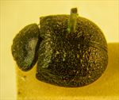
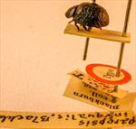
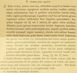

Click on images to enlarge
.jpg){kind=link}

Fig. 1. Paropsis inaequalis type specimen, dorsal view
.jpg){kind=link}

Fig. 2. Paropsis inaequalis type specimen and labels
{kind=link}

Fig. 3. Paropsis inaequalis, description
Name
Paropsis inaequalis Blackburn, 1896
Corresponds to
Ta98.
Diagnosis and Notes
Blackburn (1896), deals with T. inaequalis as part of his 'subgroup iii' (i.e., those species without "strongly marked characters", whose greatest height is not or scarcely in front of the middle of the elytral margin and whose elytra are not depressed under the humeral callus). Within that group, he characterises it as:
AA. No postbasal impression on disc of elytra;
B. Elytral verrucae concolorous with or darker than general surface;
C. Puncturation of prothorax more or less close and at most moderately strong;
DD. Seriate arrangement of elytral verrucae and especially the punctures scarcely evident;
E. Elytra exceptionally finely punctulate;
FF. Form notably less wide [than in P. alta], elytra longer than wide.
By comparison with a photo of the type specimen of P inaequalis, Ta98 is likely to be this species. It shares a very similar elytral and pronotal sculpture and is found in the same geographical area. The size of the type specimen falls within the range of males of Ta98, and its A-A/BL ratio corresponds to that of a similar-sized specimen of Ta98.
Type specimen
Location: BMNH
Label data: /“Type” (red-bordered circle)/ “6130 Adel. T”/ “Blackburn coll. 1910-236.”/ “Paropsis inaequalis, Blackb.”/.
Male; Size: 7.2 (L) x 5.8 (W) x 3.25 (H) mm; A-A: 1.12 mm.
Very dark species, almost black overall. Foveal peaks present, verrucae quite large but flattened – appearing barely if at all darker than derm.
Original description
Translation of original description (Figure 3) by ChatGPT, 04/2026:
♂. Broadly oval; less convex, the greatest height (seen from the side) situated about the middle of the elytral margin; moderately shining; black, the base of the antennae and the legs spotted with red (the tarsi entirely red). Head and prothorax similarly, rather closely and somewhat strongly, almost rugulosely punctulate (but the latter at the sides coarsely rugulosely so). Prothorax broader than long as 2⅖ to 1, broadened from the apex to beyond the middle, slightly transversely impressed behind the apex, the sides strongly arcuate and in no way flattened, the posterior angles absent. Scutellum (wanting in the type specimen). Elytra not depressed beneath the humeral callus, not transversely impressed behind the base, rather coarsely, scarcely closely and scarcely subseriately (more so at the sides, less so posteriorly, coarsely) punctured; furnished with rather large, fairly numerous, not very elevated verrucae arranged somewhat in rows; interstices slightly rugulose; marginal portion scarcely (in the subapical part a little more distinctly) separated from the disc. Basal ventral segment somewhat strongly and moderately closely punctured. Length 3½ lines [~7.4 mm], width 2⅘ lines [~5.9 mm].
References
Blackburn, T. 1896, "Revision of the genus Paropsis. Part I", Proceedings of the Linnean Society of New South Wales, vol. 21, no. 4, 637-693 (page 689).
Copyright © 2026. All rights reserved.